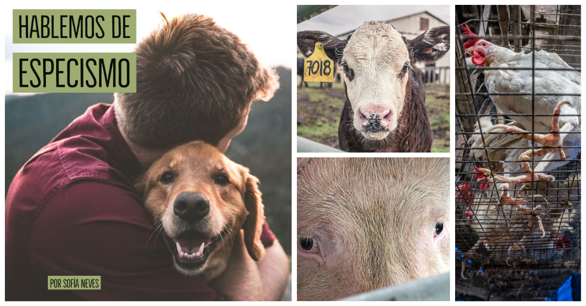
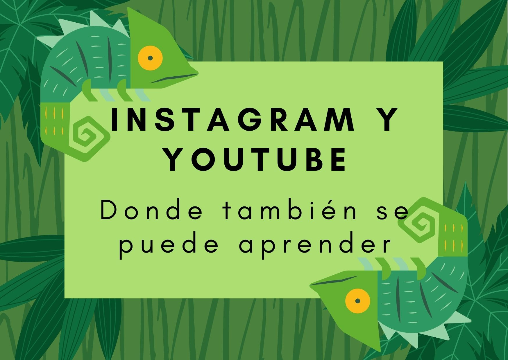

¿Qué? El veganismo es un movimiento ético, político y social por los derechos de los animales que rechaza la explotación de éstos, en cualquiera de sus formas, por parte de los humanos. Esto significa que se ve a los animales como seres sintientes, inteligentes, con emociones y no como si fueran un objeto para utilizar. ¿Cómo?

Especismo
Se llama especismo a la discriminación por especie. Implica tratar a los miembros de una especie como si fueran superiores a otra. Esto es muy frecuente ya que la sociedad nos enseña a sentir empatía y estima por algunos animales y no por otros, lo que nos lleva a cosificarlos sin importar el sufrimiento que puedan llegar a sentir.
Transición
Considero que la transición de cada unx es un tema muy personal, que cada quien tiene sus motivos y tiempos. No todxs hacemos el “click” al mismo tiempo ni nos lleva el mismo esfuerzo. Por eso voy a hablar de mí transición, tanto al vegetarianismo como al veganismo*. Qué cosas generaron ese “click” y qué hábitos cambiaron (y siguen cambiando).

Instagram y Youtube como fuentes de conocimiento
Instagram y Youtube no son sólo redes sociales donde pasar el tiempo de ocio, también es un espacio donde podemos adquirir infinito conocimiento de todo tipo. En este artículo te compartiré mis cuentas favoritas sobre activismo vegano; quiero que conozcas a estas personas que trabajan para que de a poco todxs podamos estar más informadxs.